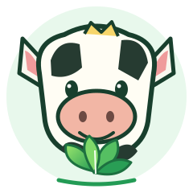

Frescura
Elegimos alimentos que aportan sabor y variedad.

vactripkCalidad precio de viciosoFrescura que se nota · Bienestar que se siente
En Vactripk creemos que una buena alimentación comienza con productos frescos, calidad y atención cercana.
Descubre másElegimos alimentos que aportan sabor y variedad.
Trabajamos con dedicación y atención al detalle.
Promovemos hábitos de alimentación equilibrada.
Estamos aquí para atenderte con amabilidad.
Nuestra historia
Somos Vactripk, una iniciativa enfocada en la alimentación y en la importancia de elegir productos con calidad y buen valor. Queremos acercar opciones frescas a nuestra comunidad y ayudar a que comer bien sea parte de cada día.
Representamos frescura, confianza, responsabilidad y el compromiso de ofrecer una experiencia cercana, donde la calidad y el precio tengan sentido para nuestros clientes.
Pequeñas decisiones diarias pueden ayudarte a construir hábitos más saludables.
Aprende y elige mejor
Una dieta variada y equilibrada ayuda a cuidar tu cuerpo. Combina diferentes grupos de alimentos y recuerda que las necesidades cambian de una persona a otra.
Aportan fibra, vitaminas y minerales. Incluye variedad de colores en tus comidas.
Huevos, habichuelas, pescado y otras fuentes ayudan al crecimiento y mantenimiento del cuerpo.
Arroz, avena, yuca y otros alimentos pueden aportar energía para tus actividades.
Contenido educativo general; no sustituye la orientación de un profesional de salud o nutrición.
Lo que nos mueve
Acercar alimentos de calidad y opciones frescas a nuestra comunidad, ofreciendo un trato amable y procurando una buena relación entre calidad y precio.
Ser una marca reconocida por su compromiso con la alimentación, la confianza de sus clientes y el servicio responsable.
Hablemos
¿Tienes alguna pregunta? Contáctanos o visítanos en Cancino II.
Escribir por WhatsApp ↗⌖Ubicación
Cancino II, República Dominicana
☎Teléfono
849-709-1245
✉Responsable
Chriss Byron Trakrel di Carlo

Chriss Byron Trakrel di Carlo